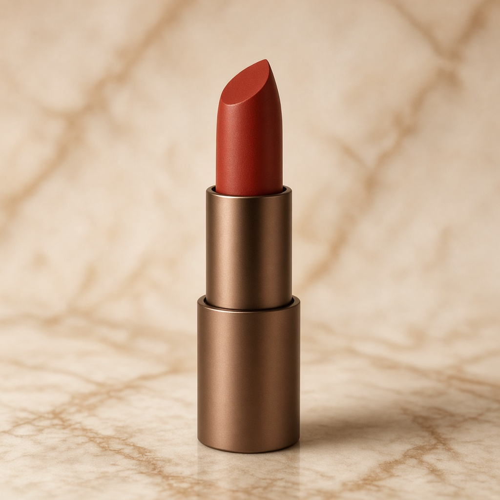

← 返回全库
3CE 唇釉 Tawny Red
3CE · 唇釉 · Tawny Red ｜ 红棕 · 雾面 ｜ 参考价 ¥99
下面是示意图，不是实拍保证。屏幕有色差，下手前请对照实物试色。
Tawny Red 红棕唇釉，比口红 Taupe 更液体、更服帖一点，仍是雾。黄皮秋冬。干唇打底，唇釉比膏更容易卡纹如果起皮。平价红棕入门。持久一般，喝热水会掉。
广告 · 点购买或用淘口令进店，下单并结算后可能产生佣金
去购买
淘口令（复制后打开淘宝 APP 粘贴）：
29￥ HU287 BZYCTQipfl9￥
